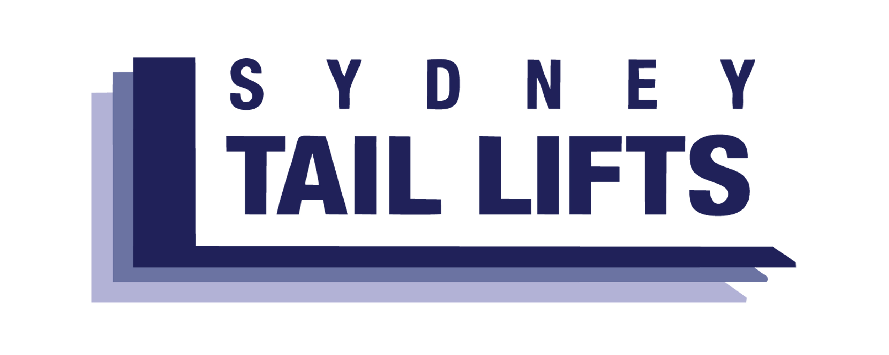

Posted by on 2025-02-05
Okay, so you've probably heard of a tail lift, right? But you're scratching your head wondering, "What in the world is it?" and "How does this contraption work?" Well, don't fret! I'm here to give you the lowdown.
Firstly, let's kick off with its definition. A tail lift (you might also hear it called a "liftgate" in some places) ain't just a fancy name for nothing. It's an actual mechanical device installed at the rear end of trucks or vans. Its primary function is pretty straight-forward: to assist in the loading and unloading of goods. Simple enough, huh?
But wait a minute! How precisely does this thingy work? It's no rocket science – trust me! The mechanics of a tail lift are actually quite basic.
Imagine this – you got a heavy box that needs to be lifted onto a truck. You're not Hercules, and we don't want you straining your back either! This is where our friend, the tail lift, steps in.
The tail lift operates basically on hydraulic or pneumatic systems. When activated, these systems fill with fluid (or air), causing pressure build-up that moves pistons attached to the platform of the tail lift. This results in lifting or lowering the platform according to your needs.
Now picture this - you've got your heavy box sitting on the tale lift platform. With just a push of a button (yes, it's as easy as that!), the hydraulics kick into action. They push up against gravity and voila! Your box gets effortlessly elevated to the height of the truck bed.
But hey! Don't forget about safety precautions while using this device because mishaps can occur if not handled properly!
So there we have it folks - your quick guide on what a tail lift is and how it works. No more head-scratching or getting puzzled looks when someone mentions a tail lift! It's just a simple yet pretty clever piece of machinery, ain't it? So next time you see a truck with one, you'll be like, "Ah yes, that's the tail lift!"